Обзор
В этом руководстве вы узнаете, как добавлять теги к фрагментам и просматривать последовательность. Он использует семплы, являющиеся частью SDK. Смело следуйте пошаговым инструкциям.
Прежде чем приступить к этому уроку, вы должны знать, как открыть редактор, как загрузить настройки предварительного просмотра и что такое фрагменты и fragmentIDs. Урок по этому вопросу см. Mannequin Урок по редактору 1. Настройка предварительного просмотра, фрагменты и сохранение.
В уроке будет использоваться множество изображений и простой цветовой код, чтобы различать области, с которыми нужно взаимодействовать, и области, на которые стоит смотреть:
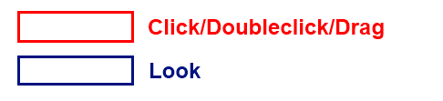
Теги
Назначение тегов фрагментам
Загрузите файл предварительного просмотра второго урока под названием "sdk_tutorial2preview.xml". См. Загрузка файла предварительного просмотра (но на этот раз файл называется «sdk_tutorial2preview.xml»).
Если файловый менеджер появится всплывающее окно, вы можете нажать «Отменить изменения в выбранных файлах», чтобы игнорировать предыдущие изменения.
Вы заметите, что на этот раз мы создаем 2 фрагмента (один под FragmentID «Idle» и один под FragmentID «Move»).
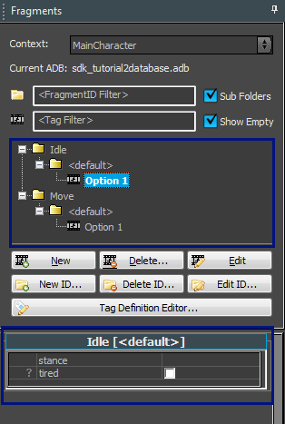
Бит под обозревателем фрагментов отображает что-то новое: теперь вы можете назначить то, что называется Теги к фрагментам. Что это значит? В предыдущем уроке мы только что сделали пару вариантов FragmentID. Когда игра запрашивает FragmentID («Idle» в нашем примере), в основном выбираются фрагменты. случайно из этих вариаций. Теперь мы можем начать добавлять к фрагменту «теги», чтобы ограничить случаи выбора определенных фрагментов. Например, мы можем пометить фрагмент тегом «устал», чтобы он выделялся только тогда, когда персонаж «устал». Или мы можем пометить определенные фрагменты как «на коленях», так и «стоя», чтобы создавать разные варианты стоек для одной и той же анимации.
Давайте сейчас попробуем этот последний пример. В настоящее время фрагмент внутри «Idle» имеет анимацию, в которой персонаж стоит. Давайте сделаем вариацию: стоя на коленях. Самый простой способ сделать это — сначала скопировать старый фрагмент с помощью перетаскивания правой кнопкой мыши:
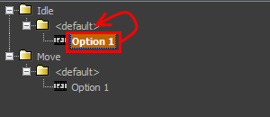
Далее мы модифицируем анимацию в этом фрагменте, чтобы она указывала на анимацию kneel_tac_idle_01:
Например вот так:
- Убедитесь, что в редакторе фрагментов выбран вариант 2. Это уже должно быть так, найдите «Полное тело: (2 из 2)», которое указывает, что выбран второй вариант). Если это не так, double нажмите «Вариант 2».
- Выберите анимационный клип (он уже должен быть выбран, при выборе он получает зеленую рамку).
- Откройте браузер анимации.
- При желании используйте фильтр (в примере ниже мы набрали «на коленях»).
- Найдите анимацию в разделе «Стоять на коленях».
- Выберите анимацию в клипе, нажав double.
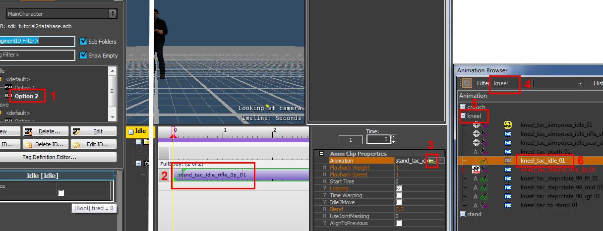
Теперь пометим этот фрагмент тегом «на коленях».
Опять же, убедитесь, что фрагмент выделен жирным шрифтом.
Затем выберите «на коленях» из списка «стойка»:
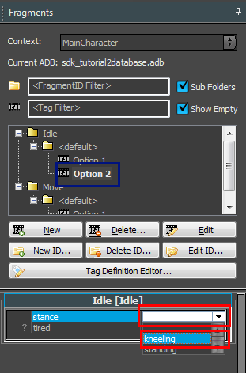
Обратите внимание, как это изменение влияет на браузер фрагментов. То, что раньше было «вариантом 2» в разделе «по умолчанию», теперь стало «вариантом 1» в разделе «на коленях».
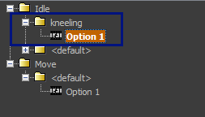
Теперь всякий раз, когда игра запрашивает «Idle» с тегом «на коленях», она получает новый фрагмент. Но если вместо этого игра запросит «Idle» с тегом «стоя», она выберет вариант по умолчанию.
Вы можете задаться вопросом, зачем вам нужны эти параметры «<default>», если вы присвоили всем параметрам соответствующие теги. Если мы знаем, что единственными вариантами являются «стоять» и «на коленях», не можем ли мы просто пометить этот другой фрагмент как «стоящий» и избавиться от опции по умолчанию? Это вопрос стиля, но было бы неплохо иметь какой-то «по умолчанию», к которому можно было бы вернуться. Например, всякий раз, когда добавляется новая позиция, полезно иметь хорошее запасное поведение. Если система не может найти соответствующий фрагмент, вы можете получить Т-позы. От вашей производственной философии зависит, хотите ли вы применить Т-позы для отсутствующих фрагментов (что приводит к обнаружению ошибок) или хотите «замести это под ковер» с опцией по умолчанию и исправлять только при необходимости.
Мы называем «позицию» Группа тегов. Некоторые теги находятся внутри групп тегов, некоторые другие теги, например «устал», — нет. Помещение тегов в такую группу гарантирует, что вы сможете одновременно выбрать только один из вариантов в группе. Таким образом, в этой установке вы не можете одновременно «стоять» и «стоять на коленях», но вы может быть одновременно «стоящим на коленях» и «усталым». Давайте посмотрим, что произойдет, когда мы это сделаем, давайте также выберем «устало»:
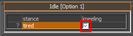
Вот как это отображается в браузере фрагментов:
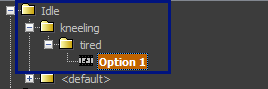
Наш фрагмент теперь стал опцией в разделе «устал», и он находится в «на коленях» (это дает вам подсказку, что «стоять на коленях» в некотором смысле более важно, чем «устал», и в этом случае «стоять на коленях» имеет более высокий приоритет, чем «устал» в этой настройке).
Если вас смущают папки для тегов и вы просто хотите увидеть весь список фрагментов, вы можете использовать флажок «Подпапки»:
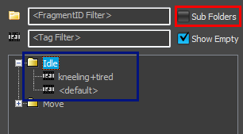
Обратите внимание, что наш фрагмент с тегами «на коленях» и «устал» теперь отображается как «на коленях+устал».
Порядок, в котором перечислены фрагменты, отражает порядок их выбора. Если существует несколько эквивалентных совпадений, выбирается первое совпадение в списке. Например, предположим, что есть тег «устал» и тег «напуган». У вас есть один фрагмент с пометкой «устал», а другой фрагмент помечен «напуган». Теперь игра ищет фрагмент для персонажа, который одновременно "устал" и «испуган». Если «устал» и «напуган» имеют одинаковый приоритет, практически не определено, какой фрагмент будет выбран (в настоящее время это связано с порядком, в котором они определены), но редактор покажет вам фрагменты в порядке выбора. Фрагменты, стоящие первыми в списке, выбираются первыми.
Выбор пустой опции в группе тегов «Стойка» означает «Мне неважно, для какой позиции она предназначена, это значение по умолчанию, запасной вариант». Точно так же, если оставить тег «усталый» неотмеченным, это означает: «Мне все равно, устали вы или нет». Это конкретно делает нет означает «не устал». Если вы хотите иметь возможность указывать фрагменты специально для состояния «не устал», вам необходимо добавить новый тег (например, с названием «notTired»).
Редактирование определений тегов
Хотя мы не будем объяснять это в этом уроке, вы можете редактировать теги в Редактор определений тегов который можно найти в меню «Файл»:
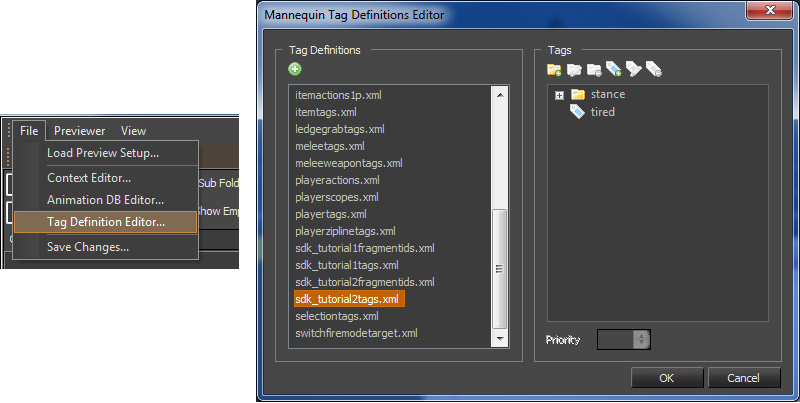
Предварительный просмотр последовательностей
Что такое последовательности предварительного просмотра
До сих пор мы просто работали над небольшими «фрагментами» анимации вашей игры (в буквальном смысле). Они будут упорядочены кодом игры, но редактор CryMannequin также предоставляет возможность предварительно просмотреть, как будет выглядеть эта последовательность, даже не запуская игру. На самом деле последовательности предварительного просмотра или вообще не используются в игре! Это полезно для самых разных вещей:
- Проработка сценариев «что если». например «Как бы это выглядело, если бы игра запрашивала ход после простоя, когда игра стоит на коленях?».
- Анализ ошибок: вы можете записать реальный эпизод из игры и загрузить его в программу предварительного просмотра. Или вы можете самостоятельно настроить последовательность действий, чтобы имитировать действия кода игры и посмотреть, работает ли она вне игры.
- Тестирование: создание небольших тестовых сценариев и их последующая перезагрузка, чтобы проверить, работают ли они. Вы также можете просмотреть, какие переходы выберет система (см. следующий урок)
Создание последовательности предварительного просмотра
Чтобы опробовать и просмотреть, как будут выглядеть ваши фрагменты в игре, в редакторе есть Предварительный просмотр. Вы можете найти эту вкладку в правой части редактора CryMannequin, выберите ее:
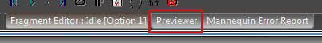
Вот как это будет выглядеть:
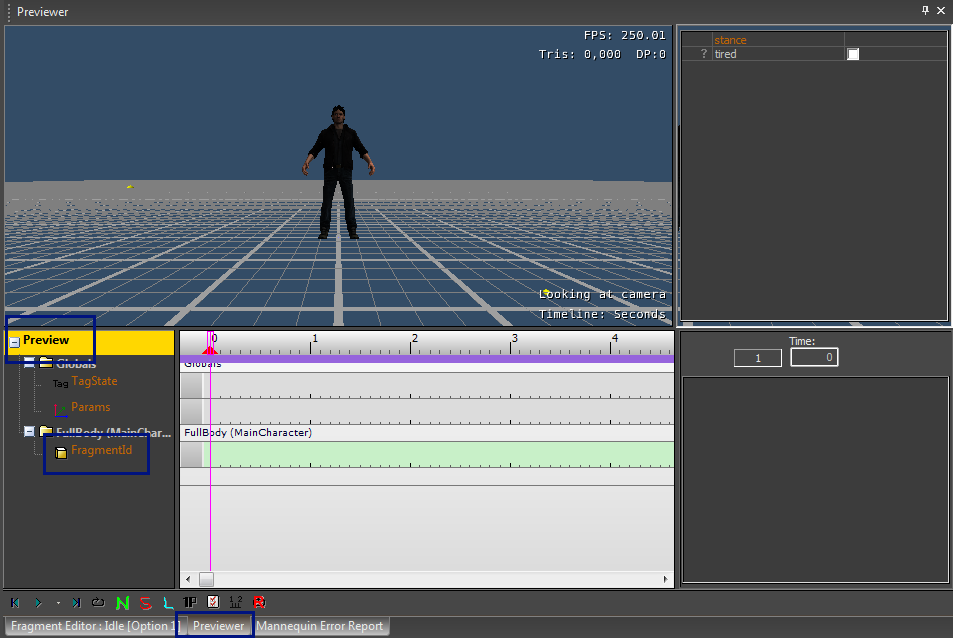
Обратите внимание, что он очень похож на Mannequin Редактор фрагментов мы работали раньше. Но есть несколько деталей, которые выдают это (кроме вкладки внизу с надписью «Просмотр»).
Вместо названия фрагмента на цветном фоне теперь просто написано «Предварительный просмотр», а вместо анимации и процедурных слоев у нас теперь есть трек с надписью «FragmentID».
Давайте посмотрим, сможем ли мы создать небольшую последовательность, в которой мы будем играть в «Idle» по умолчанию, а затем в «Move» по умолчанию.
Для этого перетаскиваем оба фрагмента на дорожку FragmentID:
- Перетащите фрагмент «Idle» по умолчанию в начало дорожки FragmentID.
- Перетащите фрагмент «Перемещение» по умолчанию немного дальше по дорожке FragmentID.
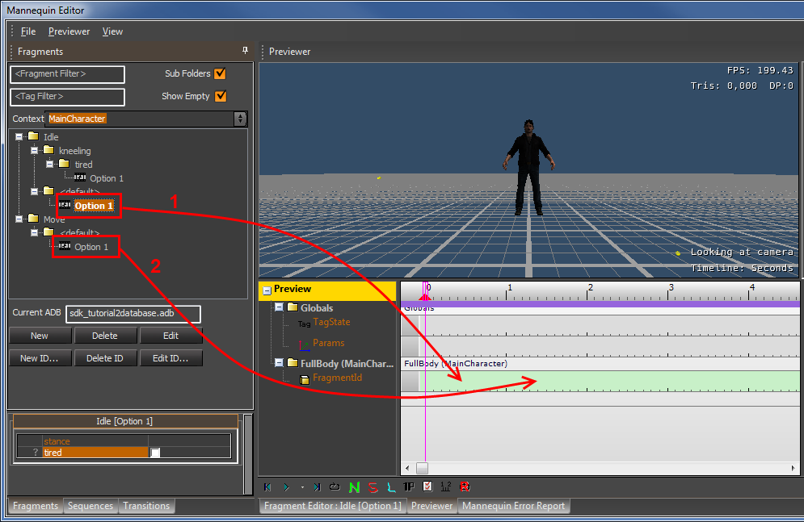
Пока вы перетаскивали, многое происходило автоматически, давайте объясним, что произошло:
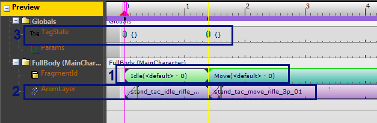
- Вы добавили «Idle» и «Move» на трек FragmentID. Это имитирует то, что игра делает для воспроизведения анимации: она просто запрашивает «Idle», а затем «Move». Средство предварительного просмотра имитирует процесс выбора, и, поскольку мы не запрашиваем какие-либо конкретные теги (мы сделаем это позже), он просто выбирает фрагменты по умолчанию для обоих FragmentIDs.
- Система показывает, в какие фактические анимационные клипы переводятся эти фрагменты, и отображает это на слое анимации.
- Когда мы отбрасывали фрагменты, это также создавало две точки (ключи) на TagState трек. Что они имеют в виду, должно стать ясно на следующем этапе...
Теперь перетащим на трек специальный фрагмент, в котором есть теги «на коленях» и «устал»:
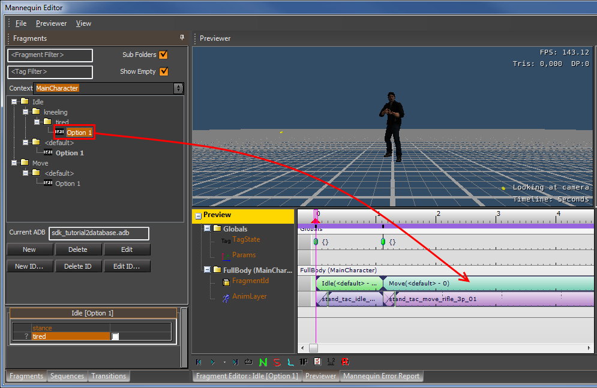
Появляется фрагмент и обратите внимание:
- Фрагмент теперь помечен как «на коленях+уставший - 0», как и следовало ожидать.
- Трек TagState теперь содержит тональность с надписью "kneeling+tired". Это имитирует тот факт, что игра должна каким-то образом запрашивать и эти теги вместе с FragmentID.
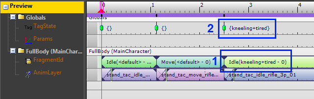
Индекс опциона
Если вы выберете клавишу fragmentID, вы можете изменить индекс опции (OptionIdx), если захотите выбрать другую опцию:
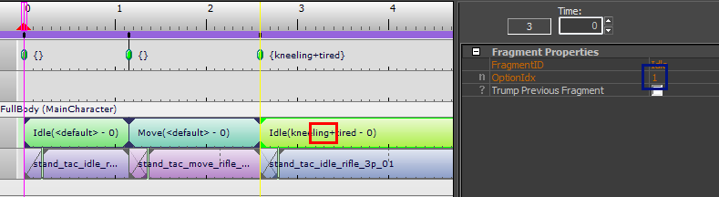
Здесь у нас OptionIdx = 1, поэтому выбран первый вариант.
Если вы установите OptionIdx = 0, система выберет опцию случайным образом, а клавиша FragmentID вообще не будет отображать число.
Если вы используете индекс опциона, который превышает количество опционов, он делится на количество опционов, а остаток определяет фактический опцион. Например, если у вас есть 3 варианта и вы установили OptionIdx=5, будет выбран вариант 2.
Если вам интересно, мы поговорим о опции «козырить предыдущим фрагментом» в более поздний раздел.
TagState Ключи
Давайте немного поиграем с этим TagState чтобы почувствовать, как это работает.
- Выберите этот ключ.
- Отключите тег «устал».
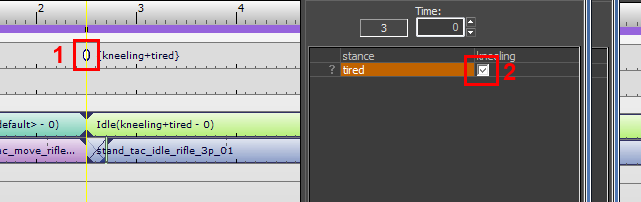
Результат:
- Ключ теперь называется просто «на коленях» (это единственный тег, который все еще установлен внутри ключа).
- Выбранный фрагмент теперь снова является фрагментом по умолчанию: «<default> - 0». Этот фрагмент теперь «наилучшим образом соответствует» запросу игры.
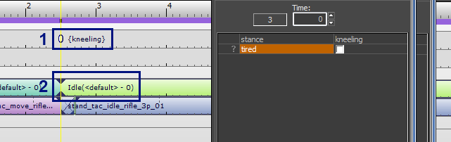
Давайте поиграем еще. Снова включите тег «устал» внутри этого ключа:
Переместите клавишу немного вправо:
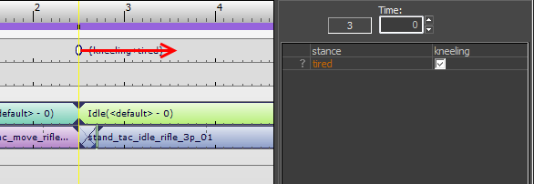
Это имитирует ситуацию, в которой игра запрашивает эти теги («на коленях+устал»). после запрашивает FragmentID "Idle". Это означает, что в момент запроса «Idle» теги не установлены, и будет выбран фрагмент по умолчанию:
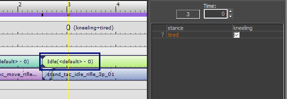
Очень важно помнить об этом, когда вы начинаете перетаскивать клавиши на дорожке FragmentID или TagState. Порядок, в котором запросы поступают в систему, влияет на то, какие фрагменты в конечном итоге будут выбраны. Например, если вы хотите переместить определенный фрагмент, вам нужно выбрать одновременно клавиши FragmentID и TagState над ним (чтобы выбрать оба одновременно, вы можете использовать обычное множественное выделение: перетащите рамку вокруг обоих с помощью левой кнопки мыши или используйте CTRL+щелчок левой кнопкой мыши, чтобы выбрать больше объектов, оставляя выделенными старые).
Это не является частью руководства, но вместо использования перетаскивания вы также можете создавать клавиши на треках FragmentID или TagState вручную. Используйте double-кликните по треку, чтобы создать пустые клавиши, и заполните свойства ключа справа.
Вы можете удалить ключи, нажав DEL (или выбрав «Удалить» в контекстном меню), пока ключ выбран. Удалите как клавишу TagState, с которой мы играли, так и соответствующую клавишу FragmentID:
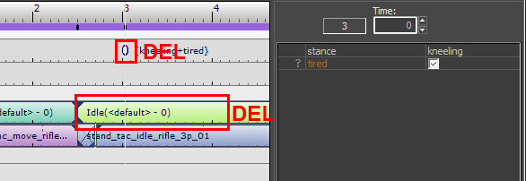
Отстыковка средства предварительного просмотра
Если вы хотите, вы можете вытащить Previewer из редактора моделей и поместить его рядом с остальной частью редактора. Это дает возможность работать над отдельными фрагментами и сразу видеть, как при этом изменится последовательность.
Вы также можете закрепить программу предварительного просмотра в другом месте, если хотите. Например, вот программа предварительного просмотра рядом с редактором фрагментов:
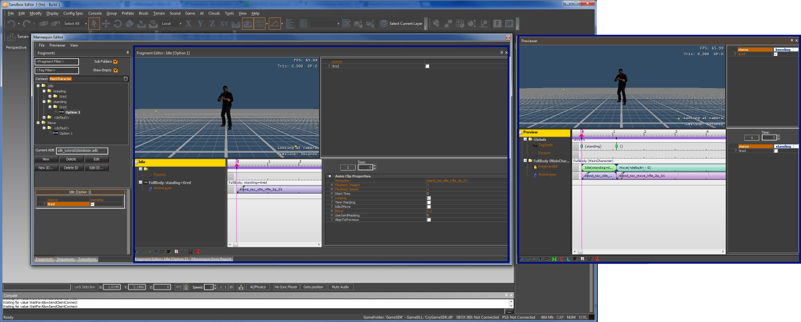
Сохранение и загрузка последовательностей предварительного просмотра
Вы можете сохранить последовательность, которую мы только что настроили, используя пункт меню «Просмотр/Сохранить последовательность...». Дайте ему красивое имя и сохраните его, например, назовите его «моя тестовая последовательность».
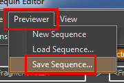
Чтобы загрузить эпизод, вы можете использовать пункт меню «Просмотр/Загрузить эпизод...» или еще проще: просто откройте его на вкладке «Секвенции» слева.
- Выберите вкладку «Последовательности».
- Дважды щелкните значок папки, чтобы открыть ее (теперь должна появиться сохраненная ранее последовательность действий).
- Дважды щелкните последовательность, чтобы загрузить ее (или выберите ее и нажмите кнопку «Открыть» ниже).
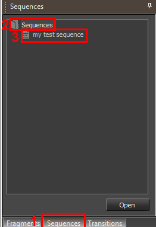
Предварительный просмотр тегов фильтра
Использование ключей состояния тегов при настройке последовательности предварительного просмотра может оказаться утомительным. Перетаскивание помогает настроить эти клавиши, но бывают случаи, когда вы просто хотите, чтобы одни и те же теги устанавливались все время. Или вы хотите создать общую последовательность и посмотреть, как она будет выглядеть при различных обстоятельствах. Например, вы можете настроить базовую последовательность движений, такую как «Холостой ход -> Движение -> Холостой ход», как для «стояния», так и для «стояния на коленях». Поддержание всех этих различных последовательностей может раздражать, когда количество стоек становится все больше и больше. Было бы проще, если бы вы могли установить общую последовательность, а затем заполнить тег позиции. Именно здесь Предварительный просмотр тегов фильтра вступить в игру.
На этом этапе вы, возможно, заметили, что в редакторе есть три области, которые выглядят очень похоже. Но пусть это вас не смущает: все они имеют разное значение! О двух из них мы уже говорили, третий отображает Предварительный просмотр тегов фильтра. См. рисунок ниже:
- Это теги, связанные с фрагментом, который мы сейчас редактируем (фрагмент, выделенный жирным шрифтом в браузере фрагментов). См. раздел о Назначение тегов фрагментам.
- Это теги, установленные в ключе TagState, который мы помещаем на дорожку TagState в программе предварительного просмотра. См. раздел о TagState Ключи.
- Это Предварительный просмотр тегов фильтра.
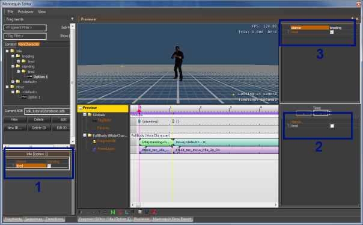
Давайте поиграем с этим. Выделим в нем и «стоя на коленях», и «уставший»:
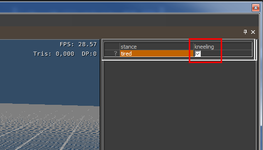
Теперь обратите внимание, как это изменилось в состоянии тега по умолчанию. изменения последовательность в средстве предварительного просмотра.
- Несмотря на то, что первый ключ TagState настроен как пустой, он помечен как "{}"...
- ...выбирается фрагмент, стоящий на коленях и уставший.
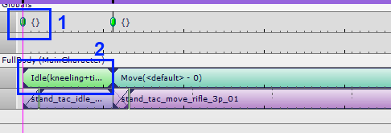
Теперь мы добавили слова «на коленях» и «устал» к тегам фильтра предварительного просмотра. Они работают по умолчанию для TagState. Таким образом, теги, которые установлены по умолчанию для всей последовательности, — «на коленях» и «устал».
Клавиши TagState все еще override хотя эти теги по умолчанию. Предположим, что в состоянии тега по умолчанию выбрано «стоять», но вы все равно можете override его с помощью клавиши «на коленях» TagState. Пустой ключ состояния тега, другими словами, ключ с меткой «{}» вообще ничего не переопределяет.
Параметры трека
В игре можно установить определенные 'параметры', который подхватывается клипами. Добавляя ключи на дорожку параметров, вы можете управлять этими параметрами в средстве предварительного просмотра.
Параметры имеют имена (например, 'TargetPos'). Какие параметры и как они используются, зависит от конкретных клипов.
Например, клип «позиционирования» принимает параметр, который представляет собой местоположение и ориентацию в пространстве, к которому нужно скользить.
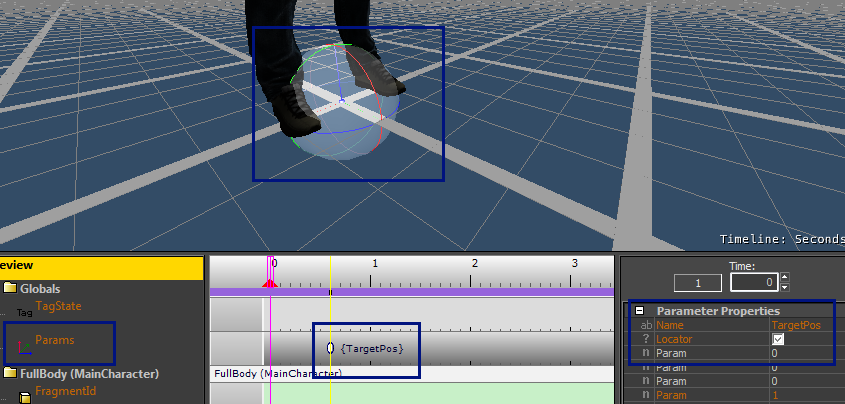
Введите имя, необходимое для процедурного клипа или игры. Для клипов процедурного выравнивания (все клипы PositionAdjustXXX) имя этого параметра должно быть "TargetPos», как на скриншоте выше.
Выберите опцию «Локатор», чтобы появилась штуковина.
Используйте кнопки на панели инструментов ниже или клавиши «W» или «E», чтобы выбрать режим перемещения или вращения гизмо.
Новая последовательность
Если вы хотите очистить последовательность, вы можете использовать пункт меню «Новая последовательность...»:
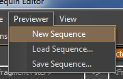
Трампинг
Существует определенное осложнение, которого мы до сих пор тщательно избегали. Когда игра запрашивает FragmentIDs, не гарантируется, что новый фрагмент запустится немедленно. Возможно, что переход по умолчанию между предыдущим фрагментом и новым фрагментом задержит выбор фрагмента. Например, чтобы закончить анимацию или подождать, пока правильная нога не окажется на земле. В каких-то случаях это нормально, в других случаях очень хочется сразу воспроизвести новый фрагмент. И это то, что мы называем Трампинг: по сути просто пропускаем период ожидания.
Это также можно смоделировать в средстве предварительного просмотра. Давайте создадим небольшой сценарий, в котором это происходит.
Откройте фрагмент Idle (на коленях+усталость) в редакторе фрагментов.
- На всякий случай: дважды проверьте fragmentID...
- ...и убедитесь, что выбран правильный вариант: «Стоя на коленях+уставший».
- Выберите первый анимационный клип и снимите флажок с параметра «Зацикливание».

Теперь вернитесь в программу предварительного просмотра и посмотрите на простую последовательность (если вы потеряли последовательность, просто перетащите фрагменты «Idle (Kneeling+Tired)» и «Moving» в программу предварительного просмотра снова, как и раньше.
Возможно, вам придется немного переместить клавишу «Перемещение» FragmentID, чтобы получить именно то, что показано на снимке экрана ниже, но вы должны заметить, что теперь анимация перемещения задерживается!

Это означает, что новая анимация начинается только после завершения предыдущей. Это поведение по умолчанию для фрагментов без цикла. До сих пор мы не устанавливали последовательности с нециклическими фрагментами, поэтому они просто еще не отображались.
Это также означает, что это поведение по умолчанию в игре. Всякий раз, когда игра хочет пропустить этот период ожидания, она настраивает ситуацию так, чтобы «козырить». Мы можем смоделировать это следующим образом:
- Выбор клавиши «Переместить» fragmentID.
- Проверка опции «Козырный предыдущий фрагмент».

Результат следующий: анимация запускается сразу:

Куда идти дальше
Вы можете продолжить с Mannequin Урок 3 по редактору — Переходы.
Или вы можете просмотреть концепции, которые мы затронули: Mannequin Редактор определений тегов, Файл последовательности (xml)и т. д.